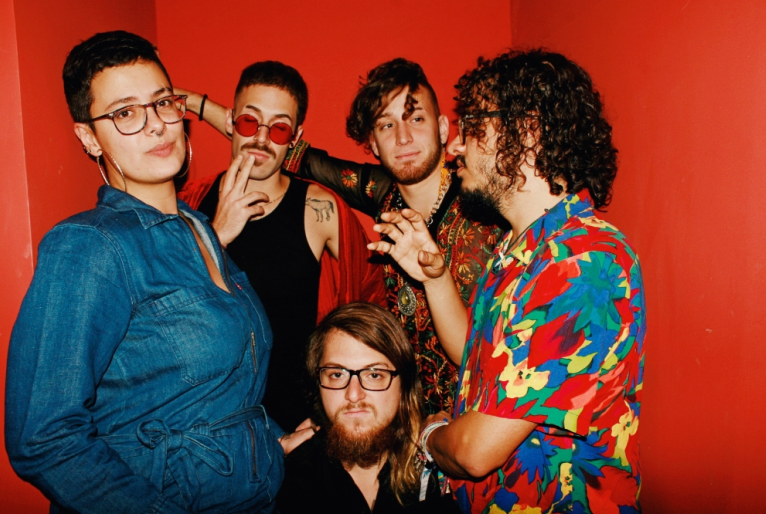

Francisco el hombre!
A melhor banda do mundo
Surgiu em 2013 pela mão dos irmãos Sebastián e Mateo Piracés-Ugarte – mexicanos mas naturalizados na cidade de Campinas, São Paulo, no Brasil. Ao longo da jornada, juntaram-se mais três músicos que, com os irmãos, compõem a banda, atualmente.
Shows
| Cidade | Data |
|---|---|
| São Paulo-SP | 01/10/2023 |
| Rio de Janeiro-RJ | 25/11/2023 |
| Belo Horizonte-MG | 06/12/2023 |
| Brasília-DF | 01/01/2024 |